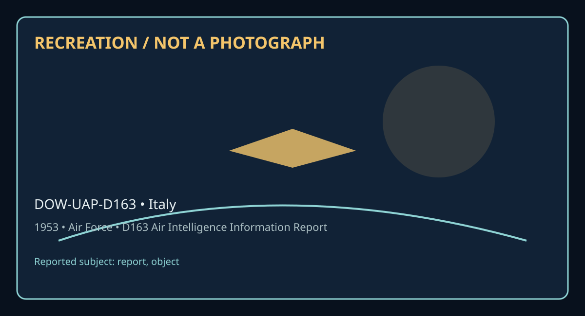

Release 07 / archival case file / DOW-UAP-D163
D163 Air Intelligence Information Report Sweden 1953
This d163 air intelligence information report places a report, object thread in a 1953 Italy record.
ID: DOW-UAP-D163
Filename:
DOW-UAP-D163-Air_Intelligence_Information_Report_Sweden-1953.pdfDate marker: 1953
Location: Italy
Agency or collection signal: Air Force
Pages read: 3

RECREATION / NOT A PHOTOGRAPH. The diagram is an interpretive editorial aid, not source imagery.
What this document says
The opening page's extracted text begins: “UNCIASSIFIID AF FORM 112 (CLASSIFICATION) APPROVED I JUNf-~ COUNTRY REPORT NO. Sweden AIR INTELLIGENCE INFORMATION REPORT SUBJECT nny1ng Saucertt Sighted By S1red1sh Pilot AREA REPORTED ON FROM (..49=CV) SWeden IOAirA, Stockholm, Sweden DATE OF REPORT DATE OF INFORMATION :A:ATION 13 January 1954 IDecember 53 January 54 l.o-c. PREPARED BY ( Office,) SOURCE BURT R()VEN Ma or USAF MC IPress and P rsonal Contact REFERENCES (Cbnt:ro nu1nbn, dir i", prni011..J rtport, dt., a, applicabl•) BAm 3A SUMMARY: (Ellter omcise ~mmar11 of report. Gwe •lgnlftcanu Infinal 0110-,ente11« paragraph. Li& lnclorure• at lower le/I. B<glntat ofreport 011 AF Form JJI-Part II.) This report f'o:rwards information on the "unknown'' object sighted on 17 December It 1953 by Captain Ulf Christiernsson, near Hassleholm, Sweden. Included is a translation of captain Chr1st1ernsson•s description of the incident, as reported in an interview with the loca1 press. There is also a brief character sketch of cap~in Christiernsson. APPROVED: Authority: ~Ll~ NND 57597 Acting Air .\ttache LJBRARY SUBJECT & AREA CODES ~ tP ---INCL& DISTRIBI/TION BY ORIGINATOR A-2 USAFE; USArmA. Stockholm NOTE: THIS DOCUMENT CONTAINS INFORMATION AFFECTING THE NATIONAL DEFENSE OF THE UNITED STATES WITHIN THE MEANING OF THE ESPIONAGE ACT. SOU. S. C. 31 AND 32. /lS AMENDED. ITS TRANSMISSION OR THE REVELATION OF ITS CONTENTS IN ANY MANNER TO ”
Across the 3 pages, the recurring terms are report, object. Those details belong to this file, not to a generic case template. Page-level reading follows:
- Page 1: UNCIASSIFIID AF FORM 112 (CLASSIFICATION) APPROVED I JUNf-~ COUNTRY REPORT NO. Sweden AIR INTELLIGENCE INFORMATION REPORT SUBJECT nny1ng Saucertt Sighted By S1red1sh Pilot AREA REPORTED ON FROM (..49=CV) SWeden IOAirA, Stockholm, Sweden DATE OF REPORT DATE OF INFORMATION :A:ATION 13 January 1954 IDecember 53 January 54 l.o-c. PREPARED BY ( Office,) SOURCE BU
- Page 2: UNCIASSIFIED AF FORM 112-PART II (CLASSIFICATION) APPROVED 1 JUNE 1948 ... r • 'AIR INTELLIGENCE INFORMATION REPORT FROM (Agencu) REPORT NO. OAirA. Stockholm. Sweden IR-J2 PAGE 2 OF 3 PAI.ES 1. On Thursday, 17 December 1953., while flying near HHssleholm, SWeden, Captain Ulf Christiernsson sighted an 11 unknown" object. The follorring is the translation of a
- Page 3: UNCIASSIFIED AF FORM 112-PART II (CLASSIFlCATION) APPROVED I JUNE 1948 - .. GJ 'AIR INTELLIGENCE INFORMATION REPORT FROM (Aomcr) OAirA. Stockholm, Sweden REPORT NO. m.-12 PAGE OF 3 PA~ES the Royal Air Force. He finished as a captain in the British Air Force, after making some thirty raids in a Mosquito against enemy territory, in both North Africa and Italy.
Historical context and disclosure schema
Read in context, this record belongs to the 1953 information environment: Air Force paperwork, a Italy setting, and the reporting conventions visible in the source. Its broader disclosure value is procedural as well as anecdotal: it shows how an observation, material question, investigation, or analytical program was routed, described, and preserved. That makes it comparable to other Release 07 records without collapsing unlike evidence into one event.
Evidence limits
The source establishes that this document exists and records what its authors or quoted witnesses wrote. It does not, by itself, prove the identity, performance, origin, or physical reality of the reported subject. Extraction preserves wording but cannot restore missing attachments, authenticate provenance, or independently validate testimony. Interpretations beyond the page-specific record remain hypotheses.
Source: supplied PDF in research/tranche-07. This article is a research aid, not a claim that the reported object was non-human.